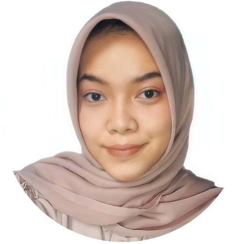
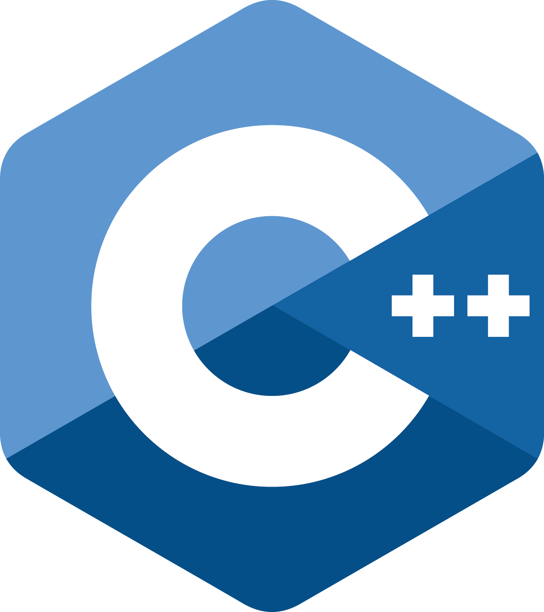

SOFT SKILL


|  | HILDA MAELA KISTYCURRICULUM VITAE |
| Nama | : | Hilda Maela Kisty |
| Tempat, Tanggal Lahir | : | Bogor, 04 Desember 2001 |
| Jenis Kelamin | : | Perempuan |
| Agama | : | Islam |
| Alamat | : | Citeureup, Kabupaten Bogor |
| Kode Pos | : | 16810 |
| (IPB University | Oktober, 2021) | |
| (November, 2020) | ||
| (Kemendikbud | Agustus, 2021) | |
| (UNSIKA | September, 2021) |
|
: | Advanced |
|
: | Advanced |
|
: | Intermediate |
|  | : | Intermediate |
| : | Intermediate | |
|
: | Beginner |
|
: | Beginner |